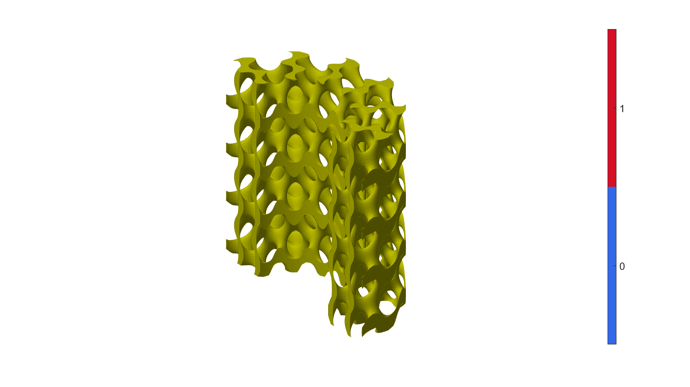

DEMO_0008_Gyroid_Cylindrical_Arrangment
This is a demo for:
- Building geometry for TPMS structures by arranging cells in cylindrical coordinates.
- case-1: Gyroid cylindrical arrangement, half cylinder.
- case-2: Gyroid cylindrical arrangement, full cylinder.
- case-3: Gyroid cylindrical arrangement, shell cylinder.
Contents
Name
License: to license
Author: Mahtab Vafaee, mahtab.vafaee@gmail.com
Change log: 2023/11/15 MV Created 2024/02/1 MV Added Examples 1 & 2 ----------------------------------------------------------------------
clear; close all; clc;
Plot settings
fontSize=20; faceAlpha1=0.8; markerSize=10; lineWidth1=3; lineWidth2=4; markerSize1=25;
Control parameters
res=100; %Resolution inputCase=3; % 1: Figure-8(a), 2: Figure-8(b), 3: Figure-8(c)
Compute gyroid sample in cilyndrical arrangment
switch inputCase %structure size case 1 %Figure-8(a) inputStruct.size=[0, 2, 1*pi, 2]; case 2 %Figure-8(b) inputStruct.size = [0, 2, 2*pi, 2]; case 3 %Figure-8(c) inputStruct.size = [1, 2, 1*pi, 2]; end inputStruct.Ns=res; % number of sampling points inputStruct.isocap=1; %Option to cap the isosurface inputStruct.surfaceCase='g'; %Surface type % Set parameters for individual gyroid inputStruct.numPeriods=[2 12 2]; %Number of periods in each direction inputStruct.levelset=0.8 ; %Isosurface level % grid coordinates, and levelset values [F,V,C]=TPMS_LCS(inputStruct); % Using grouping to keep only largest group groupOptStruct.outputType='label'; [G,~,groupSize]=tesgroup(F,groupOptStruct); %Group connected faces [~,indKeep]=max(groupSize); %Index of largest group % Keep only largest group F=F(G==indKeep,:); %Trim faces C=C(G==indKeep,:); %Trim color data [F,V]=patchCleanUnused(F,V); %Remove unused nodes
Visualizing geometry
cFigure; hold on; title('Cyllindrical Cell Arrangment','FontSize',fontSize); gpatch(F,V,[0.75 0.75 0],'none', 1); axisGeom(gca,fontSize); axis off; colormap gjet; icolorbar; camlight left; drawnow;